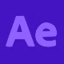
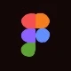

Sobre mi:
Soy Andrea Domínguez Senra, una creativa sevillana «mu sentía» 🔥, especializada en Ilustración, Dirección Artística y Producción Digital. Mi trabajo abarca desde el Motion Graphics y el asesoramiento de marca hasta el diseño web. 👩🏻🎨 Soy Técnico Superior en Artes Plásticas y Diseño, Diseñadora Gráfica y actualmente curso el Máster en Diseño Web en CEI (Centro de Estudios de Innovación). Busco proyectos creativos con alma, que reflejen la esencia de cada persona, y tengo un gran interés por aprender de profesionales en entornos cercanos. Me apasiona la fotografía, el mundo audiovisual, el 3D, el diseño de interfaces (wireframing y prototipado) y la animación, áreas donde busco volcar todo mi potencial creativo.
⋆ Inteligencia Emocional ⋆ Atención al Detalle ⋆ Comunicación Efectiva ⋆ Desarrollo Web
Software


Educación
Centro Escuela de Arte y Superior de Diseño, Sevilla: Gráfica Publicitaria 2018 - 2020.
Centro Escuela de Arte y Superior de Diseño, Sevilla: Diseño Gráfico 2020 - 2024.
CEI: Centro de Estudios de Innovación, Sevilla:
Diseño Web 2025 - Actualidad.